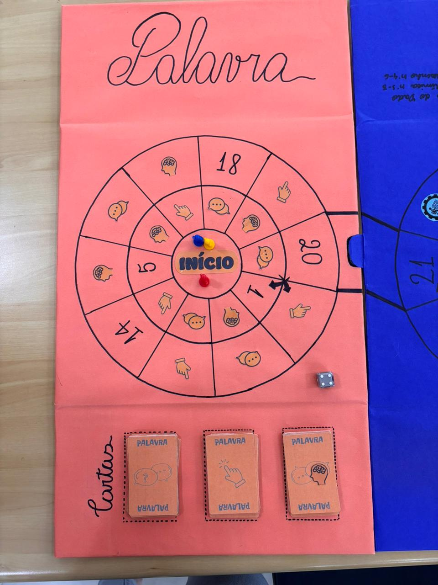
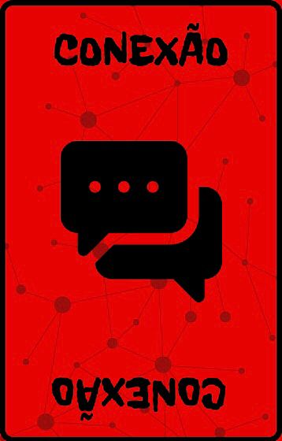
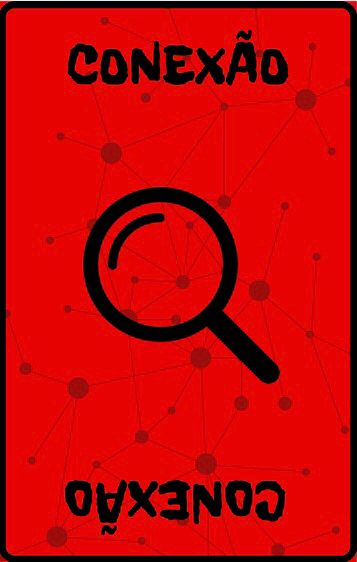
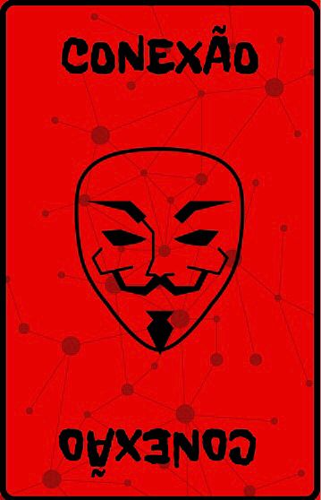
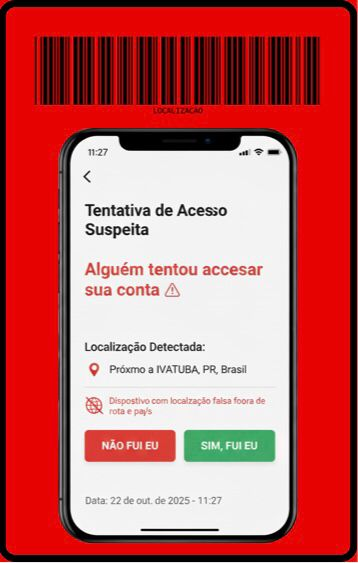

CYBER BULLYING (BULLYING VIRTUAL)
Cyberbullying é a prática de intimidação, humilhação ou assédio realizada por meio de tecnologias digitais, como redes sociais, aplicativos de mensagens e jogos online. Pode incluir a divulgação de informações pessoais, fotos ou vídeos constrangedores, a criação de perfis falsos para espalhar mentiras ou a distribuição de mensagens ofensivas.
Diferente do bullying tradicional, o cyberbullying pode acontecer a qualquer hora e em qualquer lugar, e a agressão pode ser viralizada rapidamente. Logo, o cyberbullying é um desafio crescente atualmente, mais ainda para crianças e adolescentes em idade escolar. Dessa forma, há a necessidade de intervenções pró-ativas e informadas. Esta fase do jogo enfoca o bullying virtual e, nesse contexto, deve-se buscar auxiliar na construção de um ambiente seguro tanto na rotina escolar como no mundo virtual.
A divisão dos participantes
Esta ação, sendo a terceira fase, continua o jogo sequencialmente. Mais uma vez, é interessante manter as equipes desde a primeira fase, todavia, esta decisão fica a critério de quem está coordenando o jogo.
Tabuleiro do Jogo

O Impostor
Nesta fase do jogo, há uma dinâmica de investigação. Um dos coordenadores da ação atua no papel de impostor, simbolizando o agressor virtual. Nesse sentido, durante o jogo o objetivo dos participantes é coletar provas e observar os sinais comportamentais dados pelo impostor durante o jogo para identificá-lo, isto com objetivo de ajudar os participantes a aprender a identificar situações de cyberbullying e agressores virtuais. O foco em características comportamentais aponta para o fato de que o agressor não tem traços específicos na aparência, isto é, os estereótipos de agressores não devem ser levados em consideração, a atenção nas redes deve ser geral principalmente para escolares.
Para que essa fase flua mais facilmente, cada grupo recebe um dossiê estruturado contendo campos para anotar a pista (charada), o nome do suspeito e o espaço para registrar as provas concretas (prints/mensagens) coletadas. Este será apresentado ao fim do tempo estipulado para o jogo.
Regras do jogo
-
Preparação e Recapitulação
A fase começa com uma recapitulação breve dos assuntos abordados na Ação 2 (bullying físico). Em seguida, é feita a introdução sobre o cyberbullying – tema desta fase – destacando a importância da empatia e do apoio mútuo. Uma nova parte do tabuleiro é apresentada e se integra ao tabuleiro anterior.
-
Pista Inicial
Após a conceituação de cyberbullying ser dita por todas as equipes, os grupos recebem a primeira pista a fim de começar o processo de identificar o impostor - símbolo do agressor virtual. Esta pista visa incentivar os alunos a buscarem sinais e atitudes incompatíveis com o discurso de combate ao bullying.
-
Movimentação
Os grupos se revezam lançando o dado e avançando as casas do tabuleiro. O jogo é contínuo, e o fim é definido pelo tempo disponível.
-
Tipos de Casas e Tarefas (Mecânica de Investigação)
Ao cair em uma casa, o grupo deve interagir com o símbolo indicado, que corresponde a diferentes tipos de cartas ou ações:
- Símbolo de Lupa: Indica que o grupo deve pegar uma das sete Cartas-Pista/Charada.
- Símbolo de Máscara: Indica ações comportamentais do Impostor (pistas comportamentais).
-
Balão de Fala com Interrogação: Leva a um QR Code que contém perguntas de Verdadeiro ou Falso sobre o cyberbullying.
Plano de Contingência: Se houver falha de conexão ou inoperância do QR Code, todas as Cartas-Ação possuem um número de identificação impresso. O estagiário responsável consulta uma lista de referência (PDF) que mapeia o número da carta ao seu conteúdo, garantindo a continuidade ininterrupta do jogo.
-
Participação e Resposta
O grupo tem um tempo limite de 40 segundos para discutir a pergunta e formular a resposta.
-
Pontuação e Consequências
- Avanço/Retrocesso: Respostas corretas levam ao avanço de casas e incorretas, ao retrocesso.
- Provas Concretas: As Cartas-Ação também podem incluir provas concretas (como um print de WhatsApp com mensagem agressiva), ensinando a importância da coleta de provas (print) para a denúncia.
- Alianças: É permitido que os grupos estabeleçam alianças e troquem informações ou pistas durante a investigação, incentivando a solidariedade e a união no combate ao bullying.
- Conduta dos participantes: O comportamento dos alunos durante as partidas (como respeitar a vez de falar e respeitar o colega) será avaliado, podendo somar ou subtrair pontos da equipe.
-
Registro de Evidências
Os grupos devem registrar no Dossiê a pista (charada), o nome do suspeito e as provas concretas (prints/mensagens) coletadas.
-
Votação e Condição de Vitória (Defesa Sólida)
Ao final do tempo de jogo, os grupos devem eleger quem acreditam ser o Impostor. Para que o voto seja válido e o grupo seja declarado vencedor, ele deve ser acompanhado de uma defesa que inclua:
- No mínimo, três argumentos sólidos.
- Provas concretas (baseadas nas pistas comportamentais e nas provas registradas no Dossiê).
Este procedimento consolida a mensagem de que, para combater o cyberbullying, é fundamental ter evidências e argumentação sólida, evitando acusações infundadas.
Tipos de Cartas
Carta Virtual

Carta Digital

Carta Dica

